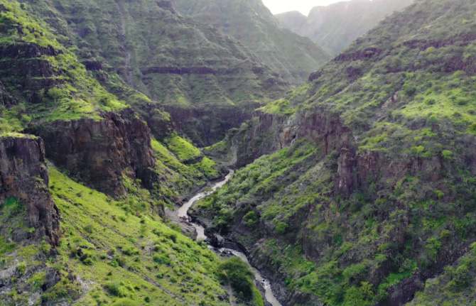

Mabonde
Mabonde ni maumbo ya ardhi yenye kina kirefu. Mara nyingi mabonde huwa katikati ya milima au vilima kama inavyooekana katika Kielelezo namba 6.

Baadhi ya mabonde huwa na maji ambayo hutengeneza mito, mabwawa au maziwa. Mfano, katika nchi ya Tanzania kuna bonde kuu la ufa la Afrika Mashariki. Katika bonde hilo, kuna Ziwa Natron lililopo mkoa wa Arusha, Ziwa Eyasi na Manyara yaliyopo mkoa wa Manyara. Pia, kuna Ziwa Tanganyika linalopatikana katika mikoa ya Kigoma, Katavi na Rukwa. Ziwa Tanganyika lina kina kirefu kuliko maziwa yote yanayopatikana Tanzania na Afrika kwa ujumla. Vilevile kuna Ziwa Nyasa linalopatikana mikoa ya Ruvuma, Njombe na Mbeya.